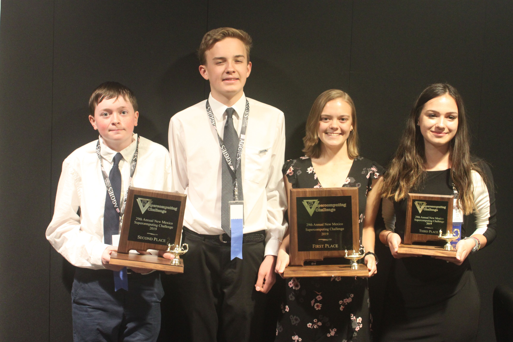

The Kickoff Conference at New Mexico Tech in Socorro will be held on the weekend of October 12-13, 2019.
New Mexico Tech is developing two closely-related cybersecurity centers, one focused on cybersecurity education and the other focused on economic development for New Mexico. The two centers are overseen by a single director, Dr. Lorie M. Liebrock, who reports to the Vice President of Academic Affairs and works closely on economic development with the Executive Director of the NMT Office of Innovation Commercialization. She is a Professor of Computer Science and Engineering and is the principal investigator for NMT's NSF-funded Scholarship for Service Program in which she has mentored over 60 students who have gone on to government service in security. Dr. Liebrock has extensive experience in cybersecurity, as well as parallel and high performance computing. She has published twenty-six journal articles, thirty-nine conference and workshop papers, and holds two US patents. Her research includes enterprise-wide cybersecurity, foundations of computer science, information assurance, parallel processing, and visualization with a focus on complex problems that require the integration of many aspects of computer science. This provides many student research opportunities, as she integrates students in all of her research - from freshmen to Ph.D. candidates. Dr. Liebrock holds both M.S. and Ph.D. in Computer Science from Rice University and B.S. and M.S. in Computer Science from Michigan Technological University. She is an Associate Editor for Applied Mathematics and Computation and is a member of ACM and IEEE. Dr. Liebrock has been on the Challenge Board of Directors and is offering an award for cybersecurity. |
| Biography: Shannon Beck works with the Secure and Trustworthy Cyberspace (SaTC) program, Directorate for Computer & Information Science & Engineering (CISE) at the National Science Foundation. A computer scientist cyber systems analyst, Shannon is on loan to the NSF from Los Alamos National Laboratory. Shannon's research focus is on computer security including novel application of bioinformatics approaches for malware. Shannon also works in developing educational programs for STEM-C and cybersecurity, ranging from elementary to college and for to adult education. |
|  | Biography: Los Alamos High School Team Members: Robert Strauss and Logan Dare |
The students who take this track for coursework are all Pre-Algebra students and have little to no experience in Netlogo coding.
These two tracks are for students who have taken Algebra 1 and have some experience in NetLogo programming or want to learn Python or Java programming.
This track is for students who have at least Pre-Calculus math level and have some experience with at least one programming language and/or have participated in the Challenge for multiple years.
This track is for teachers attending the Kickoff. They will learn some coding, technical writing, and Supercomputing Challenge milestones.
Remember that Supercomputing Challenge teams need to bring a Proposal with you to the Kickoff. See proposal guidelines.
Be sure you have registered for the Supercomputing Challenge.
Login to see the housing lists.
Check out the pictures from the Kickoff.
Get the school/team pictures to your yearbook staff.
To learn more about previous years' kickoffs, visit our archive.